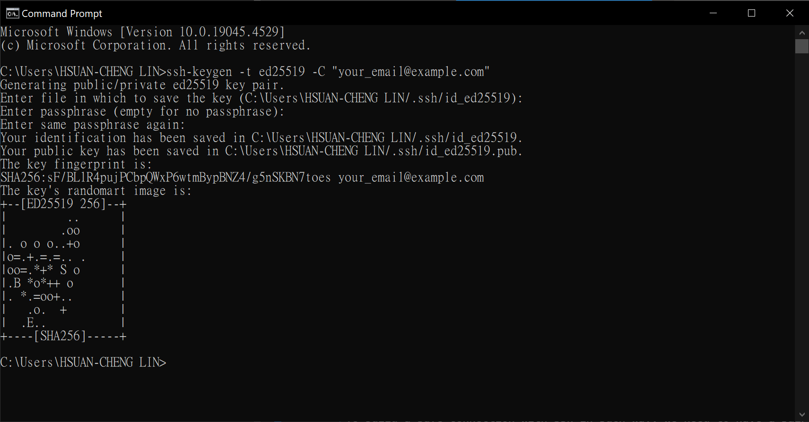
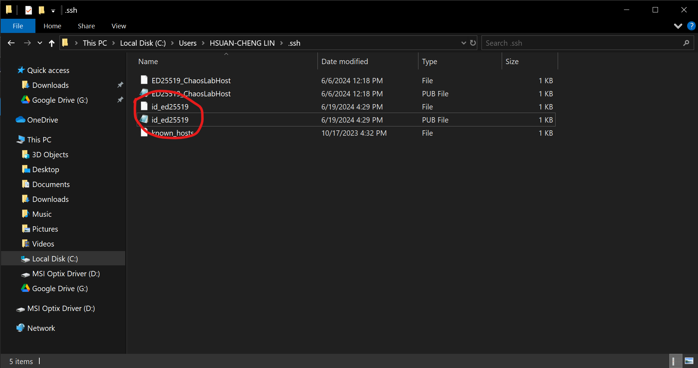

SSH#
If you don’t need below features or just don’t care, you can just skip this section.
login without fill in username and password
push to github/gitlab without tokens
SSH is shorthand for “Secure SHell Protocol”, it is designed to create a safe connection with two identities (most of the time, a local machine and a remote server). That’s why everytime login to lorenz server, you have to provide password
Lock-Key generation#
To build a safe connection with ssh in such way, we need to have a pair of lock and key. Luckily, the generation algorithm is built-in for many OS and software like Windows, MacOS and Linux. Here I’ll use Windows CMD.exe as examples
In your computer cmd.exe
ssh-keygen -t ed25519 -C "your_email@example.com"
Just press enter for all options

Now, go to your folder (C:\Users\your_user_name.ssh), you should see two files, “id_ed25519.pub” and “id_ed25519”

The id_ed25519 with .pub extension is your public key, or your lock
The id_ed25519 without .pub extension is your private key, or your key/password
Now we have lock and key, it’s time to construct a safe SSH to lorenz server without type in annoying password!
Sent Lock to remote server#
Give your public key to lorenz server, next time when you login, just show your private key and no need for type-in!
in your computer
scp .ssh/id_ed25519.pub username@140.112.67.89:
yes all pop-up notification and continue type in password, and that should upload your public key to lorenz server
Now switch to lorenz remote server
mkdir ~/.ssh
chmod 700 ~/.ssh
cat id_ed25519.pub >> authorized_keys
PuTTY additional#
# username needed
# puttygen usage needed
#